노트
어휘: 노트에 전기 회로(electric circuits)를 설명하는 데 사용되는 다음 어휘를 기록하세요. 학습 활동을 완료하면서 해당 어휘와 관련된 정의와 핵심 용어를 작성하세요.
- 교류(alternating current)
- 직류(direct current)
- 직렬 회로(series circuit)
- 병렬 회로(parallel circuit)
- 부하(load)
- 전지(cell)
- 저항기(resistor)
- 에너지 보존(conservation of energy)
- 전하 보존(conservation of charge)
- 키르히호프의 법칙(Kirchhoff's law)
교류와 직류
우리가 일상생활에서 사용하는 전자 기기는 교류(AC) 또는 직류(DC)로 작동합니다.
노트
사전 지식이나 조사를 통해 노트에 다음과 유사한 벤 다이어그램(Venn diagram)으로 AC와 DC의 유사점과 차이점을 정리하세요.
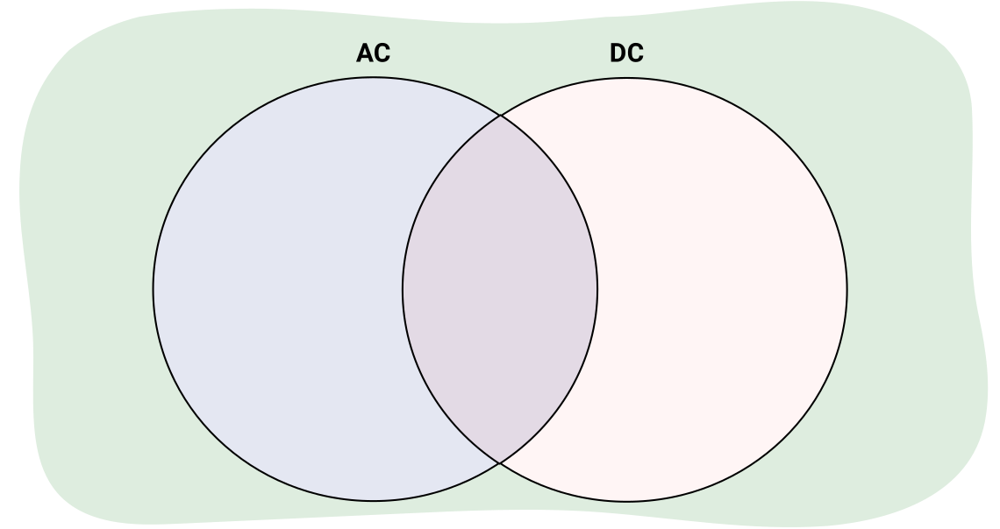
직접 해보기!
다음 질문에 답하여 이해도를 확인해 보세요.
1. 누군가 램프를 벽면 콘센트에 꽂으면, 전류는 교류(AC)입니까 아니면 직류(DC)입니까?
이것은 교류(AC)의 예입니다.
2. 배터리로 작동하는 손전등을 사용할 때, 전류는 교류(AC)입니까 아니면 직류(DC)입니까?
이것은 직류(DC)의 예입니다.
소개
사람들은 매일 전기 회로를 사용하여 전등을 켜는 직렬 회로나 자동차를 시동하는 병렬 회로를 작동시킵니다. 이러한 다양한 유형의 회로는 사람들이 사용하는 기기와 가정에서 모두 찾아볼 수 있습니다. 이 학습 활동에서는 전기 회로를 지배하는 규칙과 이러한 규칙을 사용하여 회로를 설명하는 방법을 배울 것입니다.
위험
전기 회로를 만들면 감전의 위험이 있을 수 있습니다. 전기 회로를 만들 때는 1.5V AAA 배터리나 9V 배터리와 같은 저전압 전원만 사용하세요.
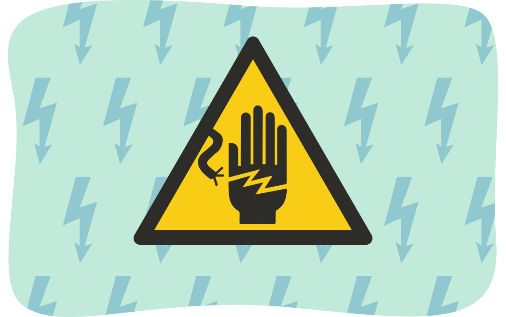
주의: 디지털 및 아날로그 멀티미터 사용법을 숙지하세요. 아날로그 및 디지털 멀티미터는 잘못된 사용으로 쉽게 손상될 수 있습니다.
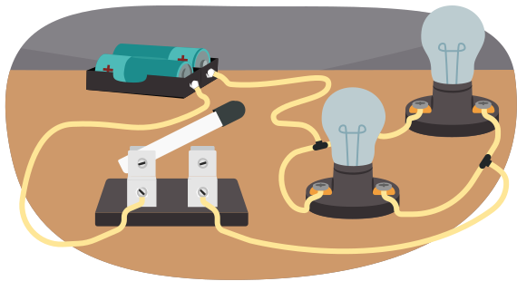
전기 회로
회로는 전류가 따라 흐르는 경로입니다. 다음 이미지를 살펴보고 회로의 다양한 부분을 확인해 보세요.
이 과정에서 우리는 관습적 전류(conventional current)를 살펴보고 있으므로, 전류는 배터리의 양극 단자에서 나와 회로를 통과한 후 다음 그림과 같이 음극 단자로 다시 돌아갑니다.
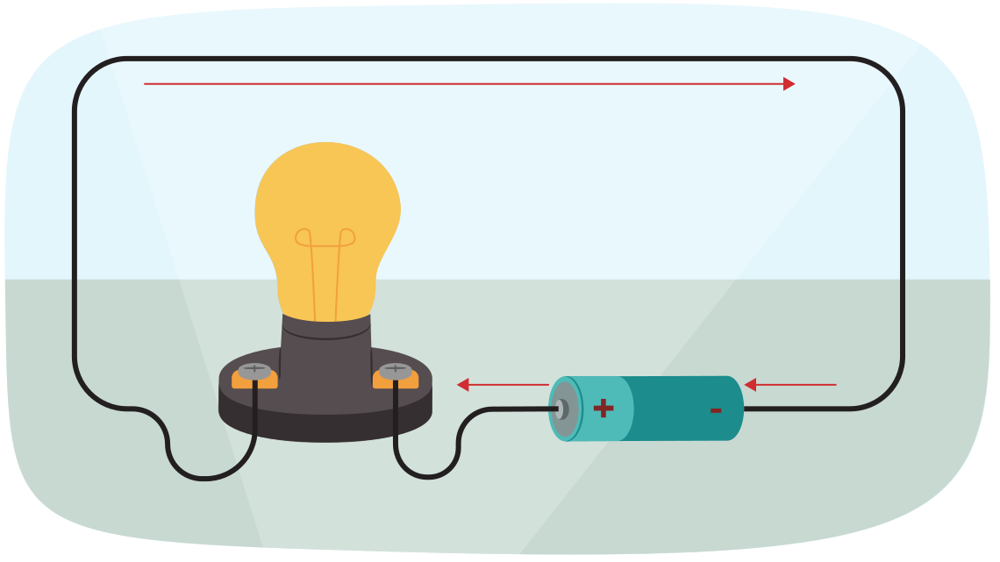
대부분의 사람들은 위와 같이 회로를 그림으로 그리는 것이 어렵고 시간이 많이 걸린다고 느낄 것입니다. 따라서 이 과정을 더 쉽고 빠르게 하기 위해 간단한 회로 기호가 대신 사용됩니다.
회로 그리기
회로는 상당히 복잡할 수 있으며, 전위 공급원, 부하, 전선, 제어 장치 등 다양한 유형의 요소를 포함할 수 있습니다. 다음 그림은 앞의 회로를 회로 기호를 사용하여 어떻게 그리는지 보여줍니다.
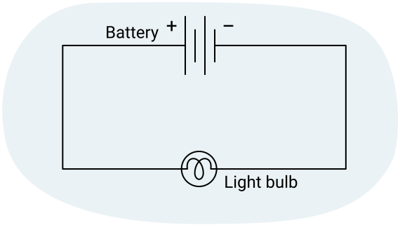
전기 회로에서 사용되는 기호는 다음 표에 나와 있습니다:
| 장치 | 회로 기호 | 기능 |
|---|---|---|
| 전선(wire) | 한 장치를 다른 장치에 연결하는 데 사용되는 도체. | |
| 열린 스위치(open switch) | 회로를 켜거나 끄는 데 사용되는 장치 (이 경우 꺼진 상태). | |
| 닫힌 스위치(closed switch) | 회로를 켜거나 끄는 데 사용되는 장치 (이 경우 켜진 상태). | |
| 전지(cell) | 회로에 전력을 공급하는 데 사용되는 전위차 공급원. | |
| 배터리(battery) | 여러 개의 전지가 함께 연결된 것 – 전위차를 높이거나 전원이 소진되기까지의 시간을 늘립니다. | |
| 저항기(resistor) | 회로에서 전기 에너지를 사용하는 장치. | |
| 가변 저항기(variable resistor) | 다양한 양의 전기 에너지를 사용하도록 조절할 수 있는 장치. | |
| 전구(light bulb) | 전기 에너지를 빛(과 열)으로 변환하는 장치. | |
| 전동기(motor) | 전기 에너지를 운동(운동 에너지)으로 변환하는 장치. | |
| 전류계(ammeter) | 전류를 측정하는 데 사용됩니다. | |
| 전압계(voltmeter) | 전위차를 측정하는 데 사용됩니다. |
회로의 종류
이 단원에서 공부할 간단한 전기 회로의 경우, 구성 요소를 배치하는 세 가지 가능한 방법이 있습니다. 직렬, 병렬, 또는 이 둘의 조합일 수 있습니다.
노트
다음 회로도를 살펴보세요. 제공된 그림을 사용하여 이어지는 질문에 노트에 답하세요. 예시 답안과 비교하여 이해도를 확인하세요.
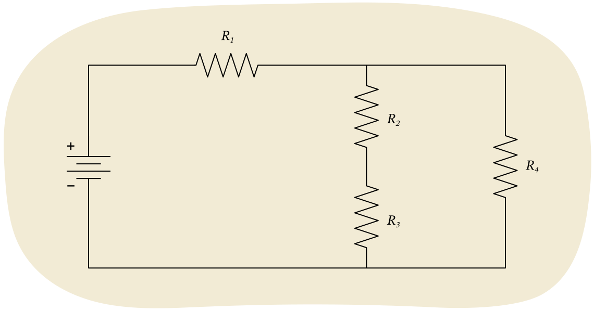
1. 이 회로에서 전류의 경로를 설명하세요.
모든 전류는 배터리의 양극 단자에서 시작하여 R1을 통과합니다. 그런 다음 전류는 두 부분으로 나뉘어, 일부는 R2와 R3를 통과합니다. 나머지 전류는 R4를 통과합니다. 분리된 두 전류는 다시 합쳐져 배터리의 음극 단자로 돌아갑니다.
2. 어떤 저항기가 직렬로 연결되어 있고 어떤 저항기가 병렬로 연결되어 있습니까?
배터리에서 나온 모든 전류가 R1을 통과해야 하므로, R1은 배터리와 직렬로 연결되어 있습니다. 그러나 R1을 통과하는 이 전류는 두 가지 다른 경로를 취할 수 있으므로, R2와 R3는 모두 R4와 병렬로 연결되어 있습니다. 두 저항기 R2와 R3는 직렬로 연결되어 있는데, R2를 통과하는 모든 전류가 R3도 통과해야 하기 때문입니다.
3. R1이 회로에 연결된 방식과 R2 및 R3가 연결된 방식을 비교하고 대조하세요.
이 모든 저항기는 직렬 연결을 포함합니다. 차이점은 R1은 배터리와 직렬로 연결되어 모든 전류가 이를 통과하도록 한다는 것입니다. 다른 두 저항기는 배터리와 직렬이 아닌데, 일부 전류가 R4를 통과할 수 있기 때문입니다. 그러나 R2를 통과하는 모든 전류가 R3도 통과해야 하므로, 이 둘은 서로 직렬로 연결되어 있습니다.
노트
연습: 직렬 및 병렬 회로
활동의 다음 부분으로 넘어가기 전에, 회로도를 분석하고 어떤 유형의 회로인지 판별하는 데 익숙해지는 것이 매우 중요합니다. 회로를 통한 전류의 흐름을 쉽게 설명할 수 있어야 합니다. 다음 섹션으로 넘어가기 전에 노트에서 다음 질문들을 풀어보세요. 완료되면 답안지새 창에서 열림와 비교하여 이해도를 확인하세요.
1. 다음 회로도에서 두 개의 저항기가 배터리에 연결된 것을 살펴보세요. 이 그림을 사용하여 이어지는 질문에 답하세요.
a) 전류의 경로를 설명하고 그 결과를 사용하여 저항기가 직렬로 연결되어 있는지 병렬로 연결되어 있는지 설명하세요.
b) 어느 하나의 저항기를 제거하여 틈이 생기면 전류에 어떤 일이 일어나는지 설명하세요.
2. 다음 회로도에서 두 개의 저항기가 배터리에 연결된 것을 살펴보세요. 이 그림을 사용하여 이어지는 질문에 답하세요.
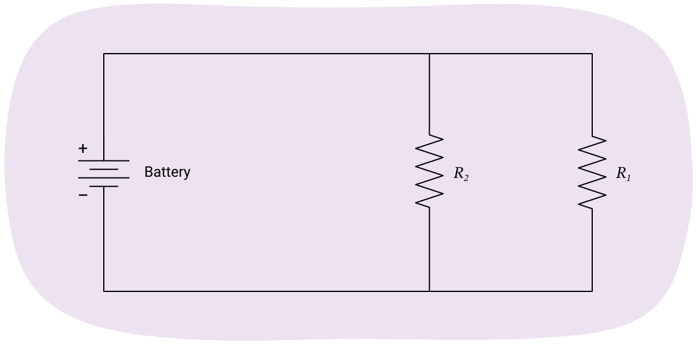
a) 전류의 경로를 설명하고 그 결과를 사용하여 저항기가 직렬로 연결되어 있는지 병렬로 연결되어 있는지 설명하세요.
b) 어느 하나의 저항기를 제거하여 틈이 생기면 전류에 어떤 일이 일어나는지 설명하세요.
키르히호프의 법칙
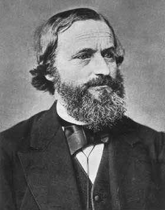
독일의 물리학자 Gustav Kirchhoff는 회로를 분석하는 데 도움이 되는 두 가지 법칙을 제안했습니다. 이 법칙들은 물리학의 두 가지 원리인 에너지 보존과 전하 보존에 기반합니다.
- 에너지 보존은 전하가 배터리와 같은 전위 에너지원을 통과할 때 에너지를 얻고, 저항기와 같은 부하를 통과할 때 에너지를 잃는다는 것을 의미합니다. 회로의 어떤 단일 루프나 완전한 경로에서든, 전하가 얻은 에너지는 잃은 에너지와 같아야 합니다.
- 전하 보존은 전기 회로에서 전하가 생성되거나 소멸되지 않는다는 것을 말합니다. 또한 회로의 어떤 지점에서도 전하가 축적되지 않습니다.
키르히호프의 전류 법칙
전하는 생성, 소멸 또는 축적될 수 없으므로, 회로의 어떤 지점으로 유입되는 전하는 그 지점에서 유출되는 전하와 같아야 합니다.
직접 해보기!
다음 시뮬레이션을 사용하여 직렬 및 병렬 회로에서 전류에 어떤 일이 일어나는지 관찰하세요.
이 안내새 창에서 열림를 따르고 직렬 회로 실험실새 창에서 열림 및 병렬 회로 실험실새 창에서 열림 시뮬레이션을 사용하면서 관련 활동을 풀어보세요.
키르히호프의 전류 법칙에 대한 발견을 요약해 봅시다:
공식
직렬 회로:
전류는 회로의 모든 부분에서 동일합니다.
등.
병렬 회로:
접합점(전류가 분리되는 지점)으로 유입되는 전류는 접합점에서 유출되는 전류와 같습니다.
(유입 전류) (유출 전류).
노트
이제 전류에 대한 이 두 가지 규칙을 몇 가지 간단한 회로에 적용해 보겠습니다. 다음 질문에 노트에 답하세요. 예시 답안과 비교하여 이해도를 확인하세요.
1. 다음 그림을 노트에 그리세요.
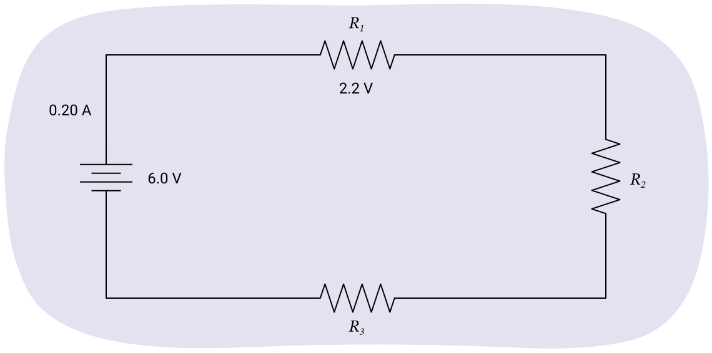
a) 이것은 어떤 유형의 회로이며 전류에 어떤 일이 일어납니까?
직렬 회로이며 전류는 일정하게 유지됩니다. 직렬 회로에서 전류는 모든 곳에서 일정합니다(동일합니다).
b) 각 저항기에 대해 다음 표를 완성하세요.
| 전류 | |
|---|---|
|
배터리 |
0.2 A |
|
R1 |
0.2 A |
|
R2 |
0.2 A |
|
R3 |
0.2 A |
2. 다음 그림을 노트에 그리세요.
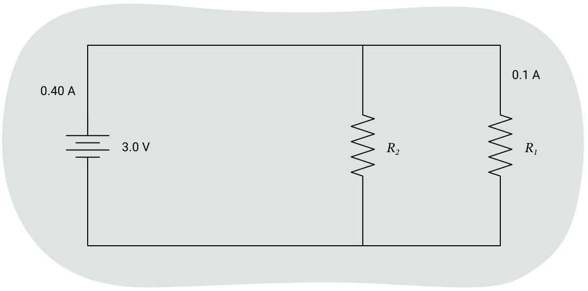
a) 이것은 어떤 유형의 회로이며 전류에 어떤 일이 일어납니까?
병렬 회로이며 전류가 분리됩니다. 병렬 회로에서 전류는 접합점에 도달하면 분리됩니다.
b) 회로의 각 지점에 대해 다음 표를 완성하세요.
| 배터리 | 0.4 A |
|---|---|
| R1 | 0.1 A |
| R2 | 0.3 A |
키르히호프의 전압 법칙
폐회로의 어떤 "루프"에서든, 배터리와 저항기 같은 여러 회로 요소가 있을 수 있습니다.
키르히호프의 전압 법칙: 이러한 모든 회로 요소에 걸친 전압차의 합은 0이어야 합니다.
에너지는 생성, 소멸 또는 축적될 수 없으므로, 전지나 배터리에 의해 추가된 모든 에너지는 회로의 장치에 의해 사용되어야 합니다.
직접 해보기!
다음 시뮬레이션을 사용하여 직렬 및 병렬 회로에서 전위 에너지에 어떤 일이 일어나는지 확인하세요.
이 활동에서는 직렬 및 병렬 회로에서 전위(전압)에 어떤 일이 일어나는지 배울 것입니다. 이 안내새 창에서 열림를 따르고 직렬 회로새 창에서 열림 및 병렬 회로새 창에서 열림 시뮬레이션을 사용하면서 관련 활동을 풀어보세요.
키르히호프의 전압 법칙에 대한 발견을 요약해 봅시다:
공식
직렬 회로:
배터리에 걸리는 전위는 각 저항기에 걸리는 전위의 합과 같습니다.
병렬 회로:
병렬 회로의 모든 부분에서 전위는 동일합니다.
이제 전위에 대한 이 두 가지 규칙을 몇 가지 간단한 회로와 혼합 회로에 적용해 보겠습니다.
노트
노트를 사용하여 다음 각 질문을 완성할 수 있습니다. 예시 답안과 비교하여 이해도를 확인하세요.
1. 다음 질문을 완성하기 위해 다음 그림을 노트에 그리세요.
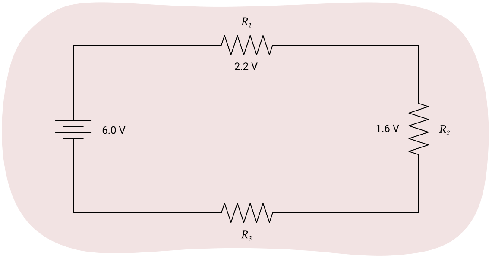
a) 이것은 어떤 유형의 회로이며, 이 유형의 회로에서 각 저항기에 걸리는 전위는 같습니까 아니면 다릅니까?
이것은 직렬 회로이며 각 저항기에 걸리는 전위는 다릅니다. 직렬 회로에서 배터리에 걸리는 전위는 각 저항기에 걸리는 전위의 합과 같습니다.
b) 각 저항기에 걸리는 전위를 기록하여 다음 표를 완성하세요.
| 배터리 | 6.0 V |
|---|---|
| R1 | 2.2 V |
| R2 | 1.6 V |
| R3 | 2.2 V |
2. 다음 질문을 완성하기 위해 다음 그림을 노트에 그리세요.
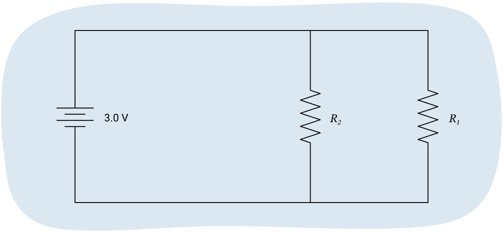
a) 이것은 어떤 유형의 회로이며, 이 유형의 회로에서 저항기에 걸리는 전압은 같습니까 아니면 다릅니까?
이것은 병렬 회로입니다. 전압은 동일합니다 (병렬 회로에서 전압은 일정합니다).
b) 회로의 각 지점에서 전압을 기입하세요.
| 배터리 | 3.0 V |
|---|---|
| R1 | 3.0 V |
| R2 | 3.0 V |
3. 다음 질문에 답하기 위해 다음 그림을 노트에 그리세요. 이 질문에서는 직렬 및 병렬 회로에서 전류와 전압에 대해 배운 내용을 결합해야 합니다.
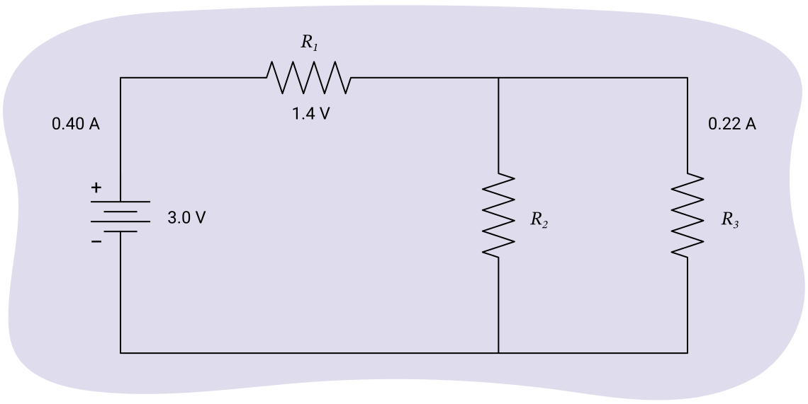
a) 이 회로에서 어떤 부분이 직렬입니까? 이 부분을 통한 전류 또는 전압은 동일할까요?
배터리와 R1입니다. 직렬에서는 전류가 동일합니다.
b) 이 회로에서 어떤 부분이 병렬입니까? 이 부분을 통한 전류 또는 전압은 동일할까요?
R2와 R3가 병렬입니다. 저항기가 병렬로 연결되어 있을 때 전압은 동일합니다.
c) 혼합 회로를 분석하세요. 전류와 전위 값을 구하면서 다음 표에 입력하세요.
| 배터리 | 0.40 A | 3.0 V |
|---|---|---|
| R1 | 0.40 A | 1.4 V |
| R2 | 0.18 A | 1.6 V |
| R3 | 0.22 A | 1.6 V |
탐구하기!
다음 짧은 동영상은 회로의 각 부분에서 전류와 전압을 구하는 방법을 설명합니다.
회로에서 옴의 법칙 사용하기
이제 직렬 및 병렬 회로에서 전류와 전위에 대한 지식을 옴의 법칙과 결합할 것입니다. 회로에서 전류와 전위를 식별하는 것뿐만 아니라 저항 값도 결정할 것입니다.
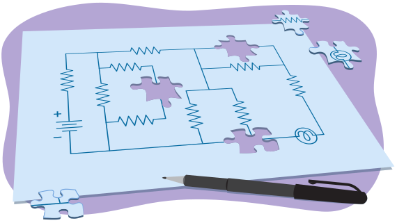
다음 개념들을 결합할 것입니다:
- 직렬 회로에서 전류는 일정합니다.
- 병렬 회로에서 전위는 일정합니다.
- 옴의 법칙: V=IR
예시: 혼합 회로
이 예시에서는 다음의 혼합 회로 그림을 사용할 것입니다.
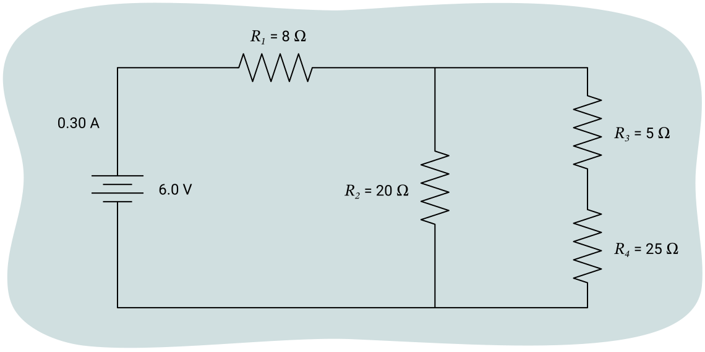
1. 이 회로를 분석하세요. 직렬, 병렬, 혼합 회로 중 어떤 것입니까?
혼합 회로입니다.
2. 어떤 부분이 직렬입니까?
배터리와 R1입니다. 이들은 동일한 전류를 가집니다.
또한 R3와 R4도 직렬입니다. 이들은 동일한 전류를 가지지만, 배터리와 R1의 전류와는 다릅니다.
3. 어떤 부분이 병렬입니까?
R2는 R3와 R4를 포함하는 회로 분기와 병렬입니다. R2의 전위는 R3와 R4의 전위 합과 같습니다.
탐구하기!
회로에서 누락된 전류, 전압 및 저항 값을 구하는 방법을 설명하는 다음 동영상을 탐구해 보세요.
노트
이제 노트에서 다음 회로를 직접 풀어보세요. 이 활동의 답안지새 창에서 열림와 비교하여 이해도를 확인할 수 있습니다.
1. 옆의 회로도에 대한 전류 및 전위 값을 구하면서 다음 표에 입력하세요.
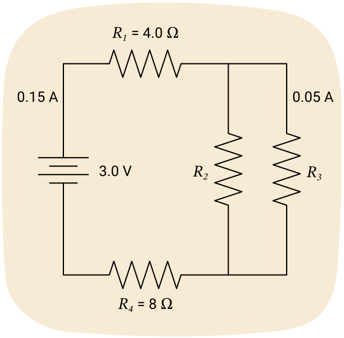
| 전류 (A) | 전위 (V) | 저항 (Ω) | |
|---|---|---|---|
| 배터리 | 0.15 A | 3.0 V | |
| R1 | 4.0 Ω | ||
| R2 | |||
| R3 | 0.05 A | ||
| R4 | 4.0 Ω |
2. 회로도에 대한 전류 및 전위 값을 구하면서 다음 표에 입력하세요.
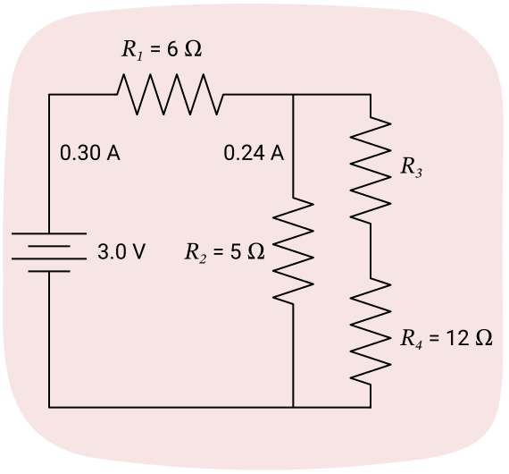
| 전류 (A) | 전위 (V) | 저항 (Ω) | |
|---|---|---|---|
| 배터리 | 0.30 A | 3.0 V | |
| R1 | 6.0 Ω | ||
| R2 | 0.24 A | 6.0 Ω | |
| R3 | |||
| R4 | 12.0 Ω |
전력
여러분은 이미 다음 방정식을 사용하여 전력이 일 또는 시간에 따른 에너지 변화와 어떻게 관련되는지 공부했습니다:
전기 에너지의 경우, 에너지 변화는 다음을 사용하여 계산할 수 있다고 배웠습니다:
이것을 위의 전력 방정식에 대입하고 정리하면 다음과 같은 결과를 얻습니다:
이것은 전력을 구하는 데 사용할 수 있는 새로운 방정식입니다. 전력의 단위는 와트(W)입니다.
때로는 저항을 사용하여 전력을 구하는 것이 더 편리합니다. 즉, 옴의 법칙 V = IR을 사용합니다. 이것을 전력 방정식에 대입하면, 전압을 모를 때 유용한 새로운 방정식을 유도할 수 있습니다:
전류를 모르는 경우, 옴의 법칙에서 I를 정리할 수 있습니다:
공식
다양한 전력 방정식:
지금까지 배운 방정식 중 어느 것이든 사용하여 전력을 계산할 수 있습니다. 어떤 방정식을 선택할지는 풀려는 문제에서 어떤 변수가 주어져 있는지에 따라 달라집니다.
직접 해보기!
이제 문제에 주어진 정보를 드롭다운 메뉴에서 풀이에 필요한 방정식과 매칭하여 올바른 방정식을 선택하는 연습을 할 것입니다. 제출을 눌러 이해도를 확인하세요.
노트
노트를 사용하여 다음 각 질문을 완성할 수 있습니다. 이 학습 활동의 답안지새 창에서 열림와 비교하여 이해도를 확인할 수 있습니다.
- 120 V에 연결되어 3.8 A의 전류가 흐르는 냉장고의 전력을 계산하세요.
- 120 V 전원에 연결된 1200 W 히터의 저항은 얼마입니까?
- 24 W 소형 형광등의 저항이 600 Ω입니다. 전구의 전류를 구하세요.
-
배터리를 통한 전압과 전류를 알면 회로의 전력도 구할 수 있습니다. 다음 회로를 풀고 전력을 구하세요.
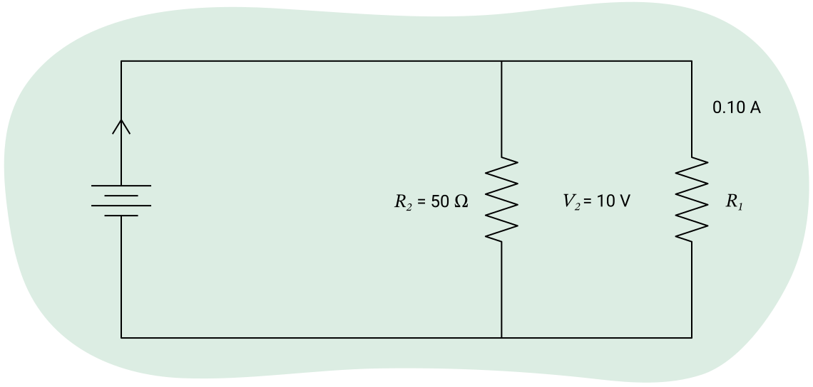
a) 먼저 값의 표를 채우세요. 행에서 두 개의 값을 알 때마다 옴의 법칙을 사용하여 세 번째 값을 구할 수 있습니다. 배터리나 R1의 저항은 필요하지 않으므로 해당 칸은 비워둘 수 있습니다.
| 전류 (A) | 전위 (V) | 저항 (Ω) | |
|---|---|---|---|
| 배터리 | |||
| R1 | 0.1 A | ||
| R2 | 10 V | 50 Ω |
b) 이제 배터리의 전류와 전위를 사용하여 회로의 전력을 구하세요.
전기 비용
전기 에너지는 무료가 아닙니다. 공과금을 납부할 때, 지불하는 금액의 일부는 사용한 전기 에너지에 대한 것입니다. 사용하는 전기 에너지의 양을 계산하기 위해 전력 방정식을 다음과 같이 정리할 수 있습니다.
공식
전기 에너지의 양:
이 전기 에너지 방정식을 사용할 때, 앞서 언급한 것처럼 전력을 계산하는 세 가지 다른 방법이 있다는 것을 고려하세요.
에너지 비용
와트와 초를 사용하여 에너지를 계산하면 줄(joule) 단위의 답을 얻습니다. 그러나 줄은 전기 에너지의 매우 작은 단위이며 결과가 종종 매우 큰 숫자를 포함합니다. 이 문제를 해결하기 위해 전기 에너지는 킬로와트시(kWh) 단위로 계산되는 경우가 많습니다.
줄과 킬로와트시의 관계는 다음과 같습니다:
1 kWh = 3,600,000 J.
가정의 전기 요금에는 줄 대신 킬로와트시가 사용됩니다. 전기 사용 비용을 구하려면, 킬로와트시로 표시된 사용 에너지에 요금을 곱하기만 하면 됩니다.
공식
전기 사용 비용:
비용 = ΔE × 요금
여기서 에너지는 킬로와트시로 측정되고 요금은 킬로와트시당 센트 또는 달러로 주어집니다.
예시: 전기 비용
전기 에너지 요금이 11.3 ¢/kWh 또는 킬로와트시당 센트라고 가정합니다. 지역 사업체가 100.0 W 백열등 20개를 1년 동안 하루 평균 10.0시간 사용하는 데 비용이 얼마나 들까요?
주어진 값:
요금 = 11.3 ¢/kWh
n = 전구 20개
P = 전구당 100.0 W
t = 1년 동안 하루 10.0시간
미지수:
비용 = ?
방정식:
비용 = ΔE×요금
ΔE=Pt
풀이:
단위가 일치하는지 확인해야 합니다. kWh는 시간 단위가 시간(hour)이어야 하므로, 그것부터 시작합시다.
t = 1년 동안 하루 10.0시간.
1년은 365일이므로, t = (10.0 h/일)×(365 일/년)
t = 3650 h
n = 20개의 전구가 있으며 각각 100.0 W를 사용합니다.
P = (20개 전구)×(100.0 W/전구)
P = 2,000 W
전력은 킬로와트 단위여야 하므로
P = 2 kW
ΔE = Pt이므로
ΔE = (2 kW)(3650 h)
ΔE = 7,300 kWh
비용 = ΔE×요금
비용 = (7,300 kWh)×(11.3 ¢/kWh)
비용 = 82,490 ¢
1달러는 100센트이므로 100으로 나누어 달러로 환산합니다.
비용 = $824.90
결론:
사업체의 연간 비용은 $825입니다. (유효 숫자 세 자리가 주어진 유효 숫자 중 가장 적은 자릿수입니다. 전구 20개는 정확한 계수 값이므로 유효 숫자를 제한하지 않습니다.)
예시: 비용 절감
사업체가 대신 13.0 W LED 전구를 사용하면, 연간 조명비를 얼마나 절약할 수 있습니까?
주어진 값:
백열등 비용 = $824.90
P = 13.0 W = 0.0130 kW
t = 3,650 h
n = 20
미지수:
비용 절감액 = ?
방정식:
ΔE = Pt
비용 = ΔE × 요금
풀이:
ΔE = (20(0.0130 kW))(3,650 h)
ΔE = 949 kWh
비용 = (949 kWh)(11.3 ¢/kWh)
비용 = 10,723.7 ¢
비용 = $107.24
절감액 = $824.90-$107.24
절감액 = $717.66
결론:
이 전구를 사용하면 연간 $718를 절약할 수 있습니다. 상당한 절감액입니다! 이는 환경뿐만 아니라 사업 예산에도 좋습니다.
노트
노트를 사용하여 다음 질문을 완성할 수 있습니다. 예시 답안과 비교하여 이해도를 확인하세요.
1. 집에 스마트 미터가 있고 전기 요금이 낮 동안 17.6센트/kWh이지만 오후 7시 이후에는 8.5센트/kWh만 든다면, 1500W를 사용하고 빨래 한 번 건조하는 데 45분이 걸리는 건조기로 빨래를 건조할 때 얼마나 절약할 수 있습니까? 건조기 사용 시간을 오후 7시 이후로 바꾸면, 150번의 빨래를 건조할 경우 1년 동안 얼마나 절약할 수 있습니까?
빨래 한 번 건조에 사용되는 에너지는 △E = Pt = (1.5 kW) × (0.75 h) = 1.125 kWh입니다.
요금 차이가 17.6 ¢/kWh – 8.5 ¢/kWh = 9.1 ¢/kWh이므로, 한 번당 절약액은:
비용 = △E × 요금 = (1.125 kWh) × (9.1 ¢/kWh) = 10.2375 ¢ (한 번 건조 기준)
150번의 경우, 절약액은 10.2375 ¢ × 150 = 1535.62 ¢ 또는 $15.35입니다.
이 시나리오에서 시간대별 요금제를 활용하면 연간 $15를 절약할 수 있습니다.
이해 연결하기
Ontario에서 정부는 비첨두 시간(전기 수요가 많지 않은 시간)에 전기를 사용하도록 사람들을 장려하고 있습니다. 하루 중 시간대에 따라 킬로와트시당 다른 비용을 적용합니다. 정부는 하루 중 다른 시간대에 사용된 전기를 측정하기 위해 가정과 사업체에 "스마트 미터"를 설치했습니다.
직접 해보기!
다음 그림을 사용하여 이어지는 몇 가지 질문에 답하세요.
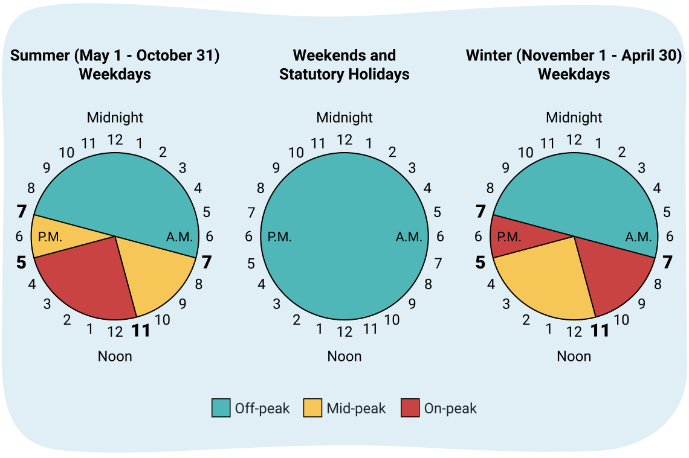
1. 정부가 가장 높은 요금을 부과하여 전기 사용을 억제하려는 시간대는 언제입니까?
여름에는 평일 오전 11시에서 오후 5시 사이입니다.
겨울에는 오전 7시에서 오전 11시, 오후 5시에서 오후 7시입니다.
2. 정부가 가장 낮은 요금을 부과하여 전기 사용을 장려하려는 시간대는 언제입니까?
평일 오후 7시에서 오전 7시 사이, 그리고 주말 언제든지입니다.
이해 연결하기
첨두 에너지 소비 시간대에 에너지 사용을 최소화하는 것 외에도, 정부와 기타 기관에서 에너지 절약을 촉진하는 다른 이니셔티브가 있습니다. 이는 환경에 도움이 될 뿐만 아니라 소비자의 비용 절감으로도 이어질 수 있습니다.
노트
Toronto Hydro에서 개발한 에너지 절약 안내서새 창에서 열림를 검토하고 에너지(그리고 전기 요금 담당자의 비용)를 절약하기 위해 사용할 수 있는 전략을 확인하세요. 다음 질문에 대한 답을 노트에 기록하세요.
- 몰랐던 비용/에너지 절약 방법 세 가지를 나열하세요.
- 즉시 시작할 수 있는 비용/에너지 절약 방법 세 가지를 나열하세요.
- 내년에 시도해 볼 수 있는 비용/에너지 절약 방법 한 가지를 나열하세요.
복습
어휘 복습: 학습 활동 시작 부분에서 기록한 어휘를 다시 확인하세요. 완전한 정의와 예문을 기록하여 모든 용어에 익숙하고 전기 회로에 대한 자신의 생각을 전달할 수 있도록 하세요.
자기 점검 퀴즈
이해도를 확인하세요!
다음 자기 점검 퀴즈를 완료하여 학습의 현재 위치와 집중해야 할 영역을 파악하세요.
이 퀴즈는 피드백 목적이며, 성적에 포함되지 않습니다. 이 퀴즈에 대한 시도 횟수는 무제한입니다. 충분한 시간을 갖고 최선을 다하며, 제공된 피드백을 반성하세요.
퀴즈를 눌러 이 도구에 접근하세요.